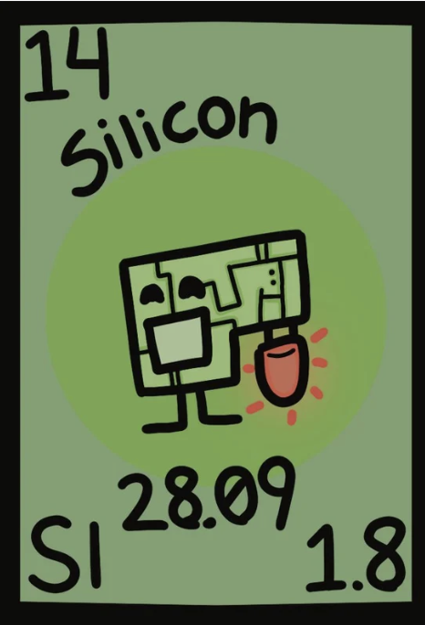
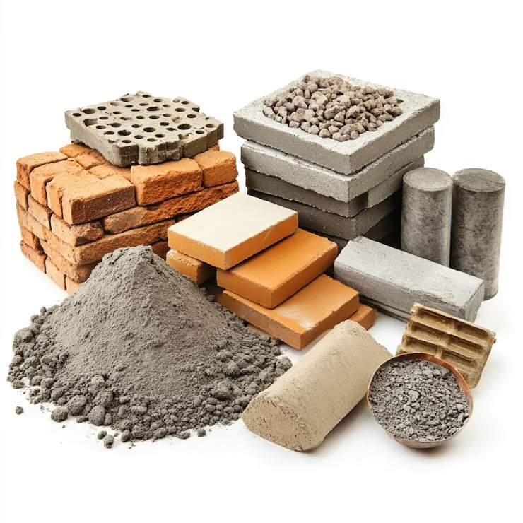

Atomic Number : 14
Atomic Mass : 28.09
Proton Number : 14
Neutron Number : 14
Category : Metalloid
Silicon was first discovered in 1824 by Swedish chemist Jöns Jacob Berzelius. He produced silicon by heating silicon compounds with potassium. Before this discovery, silicon was known to exist only in compounds such as silica and silicates. Later, silicon became extremely important in technology because of its ability to control electrical currents. Today, silicon is widely used in computer chips, solar panels, and many electronic devices.
State at room temperature: Solid Colour: Dark grey with a blue metallic shine Odour: Odourless Taste: Tasteless Density: 2.33 g/cm³ Melting point: 1414°C Boiling point: 3265°C Solubility: Insoluble in water Molecular form: Usually exists as silicon atoms (Si)
Silicon is a metalloid that has properties of both metals and non-metals. It reacts with oxygen to form silicon dioxide (SiO₂): Si + O₂ → SiO₂ Silicon can react with halogens such as chlorine to form silicon compounds. It is a semiconductor, meaning it can conduct electricity under certain conditions. Silicon is relatively stable at room temperature but reacts when heated. It forms many compounds with oxygen, metals, and other elements.
Silicon is the second most abundant element in the Earth's crust after oxygen. It is not found as a pure element in nature because it reacts easily with other elements. Silicon is mainly found in minerals such as quartz and silicates. It is commonly found in sand, rocks, and many types of clay.
Silicon is widely used in electronics because it is a semiconductor. It is used to make computer chips, transistors, and solar panels. Silicon dioxide is used to make glass, concrete, and ceramics. Silicon is also used in making silicone products such as sealants and medical materials. It is an important material in modern technology and construction.



Silicon is the second most abundant element in the Earth's crust. Silicon is the main element used in computer chips, which is why the technology industry is called "Silicon Valley." Silicon is not a metal or a non-metal; it is a metalloid with properties of both. Most sand contains silicon dioxide (SiO₂). Silicon is essential for making solar panels that convert sunlight into electricity. Silicon can withstand very high temperatures because of its high melting point. Pure silicon is shiny and brittle, unlike many metals.